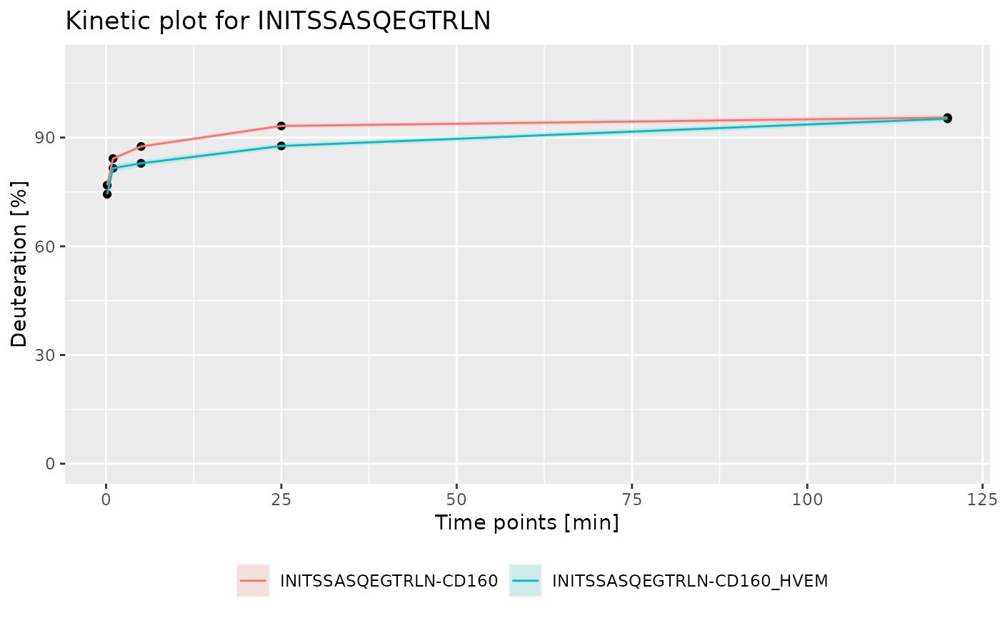
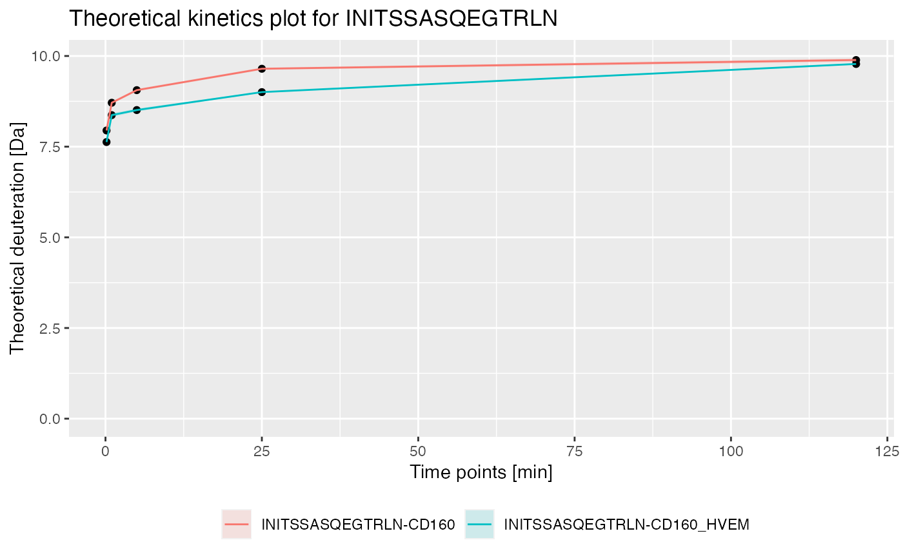

calculate_kinetics.RdCalculate kinetics of the hydrogen-deuteration exchange for given peptide.
calculate_kinetics( dat, protein = dat[["Protein"]][1], sequence, state, start, end, time_in, time_out, deut_part = 1 )
| dat | dat data read by |
|---|---|
| protein | protein value for chosen peptide |
| sequence | sequence of the peptide for which the kinetics is calculated |
| state | state of given sequence |
| start | end of given sequence |
| end | end of given sequence |
| time_in | time in for experimental calculations |
| time_out | time out for experimental calculations |
| deut_part | percentage of deuterium the protein was exposed to, value in range [0, 1] |
data frame with deuteration calculated for all the data points
between time_in and time_out.
The chosen time point for which deuteration in all four variants is calculated
is available in column `time_chosen`. The rest of
the returned structure is equivalent to structure returned by
calculate_state_deuteration.
The function calculates deuteration data for all available data points
for given peptide.
All four variants (relative & theoretical combinations) of deuteration computations
are supported. Manual correction of percentage of deuterium the protein was exposed
to during the exchange in theoretical calculations is provided.
To visualize obtained data we recommend using plot_kinetics function.
The first version doesn't support filled Modification and Fragment columns.
# load example data dat <- read_hdx(system.file(package = "HaDeX", "HaDeX/data/KD_180110_CD160_HVEM.csv")) # calculate data for sequence INITSSASQEGTRLN in state CD160 (kin1 <- calculate_kinetics(dat, protein = "db_CD160", sequence = "INITSSASQEGTRLN", state = "CD160", start = 1, end = 15, time_in = 0.001, time_out = 1440))#> # A tibble: 5 × 15 #> Protein Sequence Start End State time_chosen frac_exch_state #> <chr> <chr> <int> <int> <chr> <dbl> <dbl> #> 1 db_CD160 INITSSASQEGTRLN 1 15 CD160 0.167 76.9 #> 2 db_CD160 INITSSASQEGTRLN 1 15 CD160 1 84.2 #> 3 db_CD160 INITSSASQEGTRLN 1 15 CD160 5 87.5 #> 4 db_CD160 INITSSASQEGTRLN 1 15 CD160 25 93.2 #> 5 db_CD160 INITSSASQEGTRLN 1 15 CD160 120 95.5 #> # … with 8 more variables: err_frac_exch_state <dbl>, #> # abs_frac_exch_state <dbl>, err_abs_frac_exch_state <dbl>, #> # avg_theo_in_time <dbl>, err_avg_theo_in_time <dbl>, #> # abs_avg_theo_in_time <dbl>, err_abs_avg_theo_in_time <dbl>, #> # Med_Sequence <dbl># calculate data for sequence INITSSASQEGTRLN in state CD160_HVEM (kin2 <- calculate_kinetics(dat, protein = "db_CD160", sequence = "INITSSASQEGTRLN", state = "CD160_HVEM", start = 1, end = 15, time_in = 0.001, time_out = 1440))#> # A tibble: 5 × 15 #> Protein Sequence Start End State time_chosen frac_exch_state #> <chr> <chr> <int> <int> <chr> <dbl> <dbl> #> 1 db_CD160 INITSSASQEGTRLN 1 15 CD160_HVEM 0.167 74.4 #> 2 db_CD160 INITSSASQEGTRLN 1 15 CD160_HVEM 1 81.5 #> 3 db_CD160 INITSSASQEGTRLN 1 15 CD160_HVEM 5 82.9 #> 4 db_CD160 INITSSASQEGTRLN 1 15 CD160_HVEM 25 87.7 #> 5 db_CD160 INITSSASQEGTRLN 1 15 CD160_HVEM 120 95.2 #> # … with 8 more variables: err_frac_exch_state <dbl>, #> # abs_frac_exch_state <dbl>, err_abs_frac_exch_state <dbl>, #> # avg_theo_in_time <dbl>, err_avg_theo_in_time <dbl>, #> # abs_avg_theo_in_time <dbl>, err_abs_avg_theo_in_time <dbl>, #> # Med_Sequence <dbl>#> #>#> #> #>#> #> #>library(ggplot2) # plot example - experimental and relative bind_rows(kin1, kin2) %>% plot_kinetics(theoretical = FALSE, relative = TRUE) + labs(title = "Kinetic plot for INITSSASQEGTRLN")# plot example - theoretical and absolute bind_rows(kin1, kin2) %>% plot_kinetics(theoretical = TRUE, relative = FALSE) + labs(title = "Theoretical kinetics plot for INITSSASQEGTRLN")